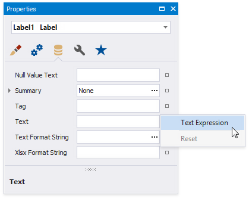
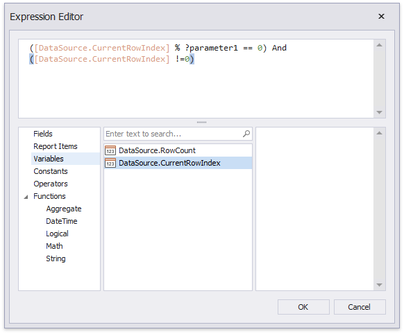
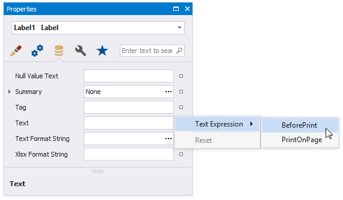
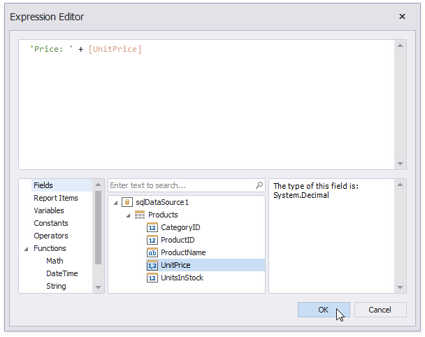
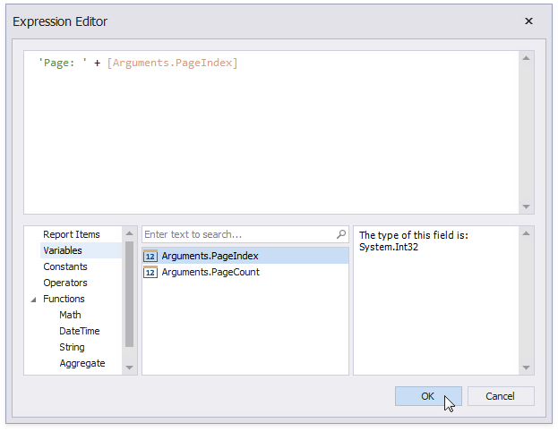

Data Binding Modes
The Report Designer works in one of the following data binding modes:
Expressions is the default binding mode.
This mode enables you to specify complex expressions that include two or more data fields, report parameters, or functions. You can also use expressions to calculate summaries of any complexity or conditionally shape your data.
Click a property's marker to see whether the invoked context menu has the PropertyName Expression item that invokes the Expression Editor.

The Expression Editor allows you to use functions, access report bands and controls, and reference data source values in the constructed expression.

Expressions Advanced is the advanced Expression mode.
This mode enables you to specify an expression that is evaluated within a control's specific event.

The Expression Editor allows you to use event argument values in the constructed expressions. Event arguments are available in the Variables section.
In the BeforePrint event, you can use data fields from all queries in the data source.

In the PrintOnPage event, data source fields are not available because data was fetched when this event occurs. You can use the event arguments that are available in the Variables section.
